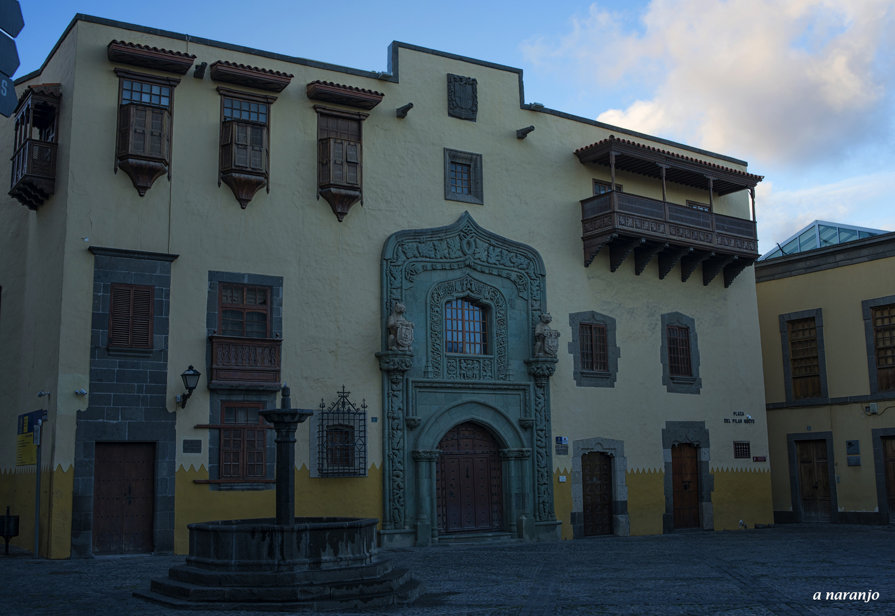

Columbus house

The current configuration of the specified property of the integration of several houses, one of which is part of the supposed old Governor's House, which Christopher Columbus believes he visited during his first trip, in 1492, in order to request help for the arrangement of the pint. The architecture has presented various concerns since 1950, preserving original areas that date back to the 16th century. The various restorations, as well as the original preserved elements, make the House a unique building and a reference obligation in the city of Las Palmas de Gran Canaria.
The Museum is made up of two large courtyards and a total of permanent exhibition rooms. The coffered ceilings, arches and columns stand out in them. The courtyard, which has a gothic well curbstone, acquires greater importance for its valuable Renaissance arches, the remains of the late Santo Domingo convent, destroyed by the attacks of the Dutch corsair Pieter van der in the 16th century